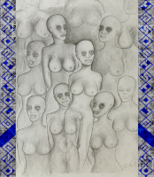
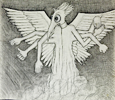
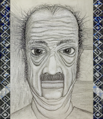
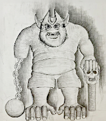
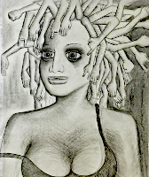
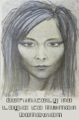
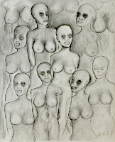
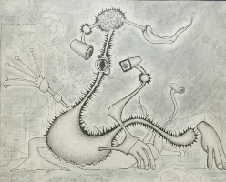
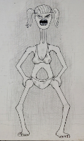

The collective hallucination of mankind. An endless sea of mind outside of time and space where we all swim each night with our ancesters and offspring and the denizens of dream. Mythical beasts and alien entities. Monsters from the nightmares of children and creatures of hollywood movies. Devils and demons and ghosts and angels and gods. No distinction of quality or form seperates holy from mundane, real from imagined, history from myth, or good from evil. There is only one life. Each night as our bodies rest our little minds awake, join the great Mind, and live a little. And every morning our bodies awake and we tuck the little piece of Mind that is ours to protect away and go about the business of survival. To make through another day so we can live another night.
.....................................................................
We act to disrupt the actions of the obsurdly rich. As they rebuild our civilizations in their image. Massive machines disguised as cities that contnually fortify, enhace, and cater to the ultra-rich while marginalizing the poor and eliminating all possible paths out of poverty. Capitalism is not a type freedom and has no fundamental relationship with democracy which is itself inherintly flawed. Popular opinion is often objectively immoral and the massess can be easily confused or convinced to villify certain minorities or violate idividual rights. The basis of any organized and civilized society must at its roots guarantee the fundamental equality, respect, access to the collective knowledgebase of mankind, and the ability to communicate annonymously with any and every person and/or entity anywhere at any time.
Ultimately leaving civilization without a stable foundation. Teatering precariously on cracked and crumbling pilons battered by waves and Sinking slowly into the mud. Healthy productive natural motivators like craftsmanship, scientific discover, empathy, and ecology supplanted by pure profit. To make money is to make nothing at all and if that is all you have made thats day you have not worked.